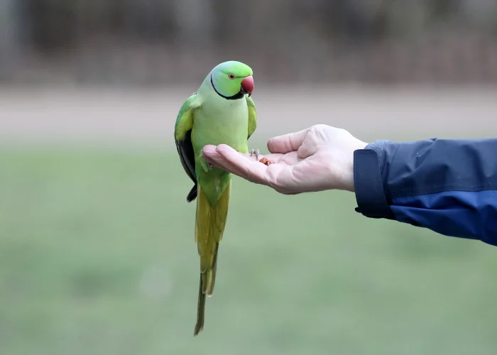
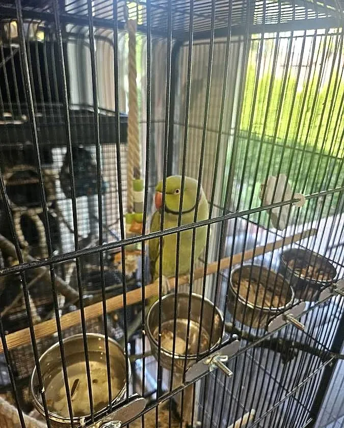
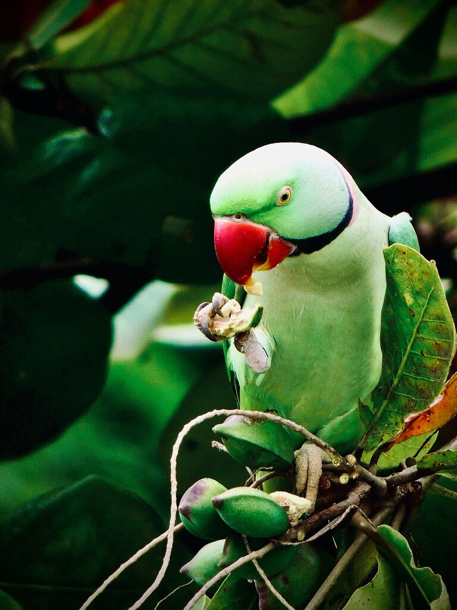

Pochodzenie
Afryka i Azja – Indie, Pakistan, regiony tropikalne
Długość
35–42 cm (z ogonem)
Długość życia
20–30 lat
Tryb życia
Dzienny, stadny
Cechy szczególne
Charakterystyczna czarna obroża u samców (po osiągnięciu dojrzałości)
Poradnik hodowli i szczegółowe informacje o gatunku

Afryka i Azja – Indie, Pakistan, regiony tropikalne
35–42 cm (z ogonem)
20–30 lat
Dzienny, stadny
Charakterystyczna czarna obroża u samców (po osiągnięciu dojrzałości)
Aleksandretta obrożna ma intensywnie zielone upierzenie, długi ogon oraz czerwony dziób. Samce wyróżniają się czarną i różową „obrożą” na szyi, która pojawia się wraz z wiekiem.

18–28°C (dobrze znosi warunki domowe)
Bardzo ruchliwa – wymaga codziennego wypuszczania
Głośna, szczególnie rano i wieczorem
Może żyć sama, ale potrzebuje dużo uwagi

Aleksandretta obrożna jest bardzo inteligentna, ciekawska i energiczna. Szybko uczy się dźwięków i może naśladować proste słowa. W naturze żyje w dużych stadach, dlatego potrzebuje stymulacji i kontaktu.
Wymaga codziennej interakcji i zajęcia – inaczej się nudzi